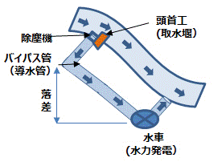
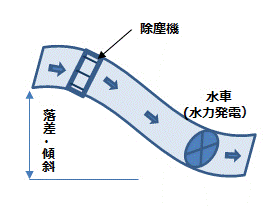
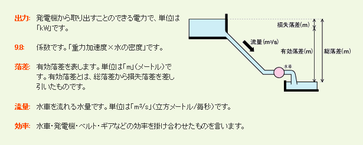

いわゆる小水力発電は、新エネ法の対象になる小規模な発電で特段の定義はないが、小規模でも規模の違いによる採算性等に違いがあるため、概ね下のような表現で分類されているのが一般的である。
・1,000kW台：「小水力発電」 ・100kW台：「ミニ水力発電」 ・10kW台：「マイクロ水力発電」 ・1kW以下：「ピコ水力発電」
このうち、100kW以上でないと事業採算性が出にくいと言われているが、10kW台の規模でも、設置工事費などの軽減や補助制度の活用で、また1kW以下の発電でも、環境教育の場づくりや観光要素など地域での事業効果が付加されると、事業化は可能になる。
導水方式は大きく分けるとバイパス方式と開水路(流水)方式がある。
| 種 類 | 特 徴 | |
|---|---|---|
| バイパス方式 | 河川・水路・貯水池などに発電のためのバイパス（管路・水路）を新設し、管路の落差の下部に発電用の水車を設置することで落差エネルギーを水車に作用させて発電させる。 | 
・水路にバイパスを作り、発電のための取水をするため、発電使用水量を一定に調整できる。 ・取水堰で確実な除塵を行うことで、水車効率を追求した高効率な水車技術とすることができる。 ・ただし、設置場所が限られ土木工事等の初期費用が高額になることが多い。 |
| 開水路方式 | バイパス水路を作らずに、既存の水路本体に水車を設置し、水路の流水エネルギーまたは水路自体の低落差を利用して、運動エネルギー・落差エネルギーを水車に作用させて発電させる。 | 
・流量変動とともに落差、水位、流速の変動がある。 ・水車は効率だけでなく、水路自体の持つ水路機能の保護などに対応する必要がある ・バイパス方式に比べ土木工事が少なく初期費用を低コストにしやすい。 |
発電出力を計算出来る式は、水車や発電機の容量、タイプにかかわらず、全て次式で表されます。

水力発電に使用される主な水車の形式は、以下の３タイプがある。
適応落差 10-200m程度
水撃をノズルから噴出させ、その水勢を水車翼に当てて水車を回転させて発電を行うタイプ
主な水車形式： ペルトン水車・クロスフロー水車・ターゴインパルス水車
適応落差 2-100m程度
水流を一点の圧力断面水管路（円筒管または短型管）に通水し、そこを流れる水圧力により、ランナと呼ばれる水車翼に動的応力（水流による運動エネルギーおよび圧力エネルギーを作用させ、回転軸を回転させて発電を行う水車
主な水車形式： フランシス水車・プロペラ水車・カプラン水車・チューブラ水車・下掛水車
発電機は、水車の出力、回転速度、運用条件等を考慮して最適なものを選定します。
・単独運転でも、系統連系でも適用できます。
・誘導発電機より価格が高いため、主に誘導発電機が適用できない場合に使用されます。
・単独運転の場合は、主に配電線のない山小屋、公園などの電源や、海外の未電化地域の電化用などに使用されます。
・系統連系の場合は、主に数百kW以上の出力の場合に適用されます。
・水車出力や運用条件等により、電源区分(単相/三相)、電圧(低圧/高圧)、周波数(50/60Hz)、冷却方式など、あらゆる仕様に対応できる発電機を供給します。
・系統連系運転の場合に適用できます。
・ただし、系統の電力品質(電圧変動等)に影響を与えない範囲(数百kW以下)での使用となります。
・価格は安く、構造も簡単、付属制御装置(自動電圧調整器など)も不要なので保守が容易です。
・水車出力や運用条件により、電源区分(単相/三相)、電圧(低圧/高圧)、周波数(50/60Hz)、冷却方式など、あらゆる仕様に対応できる発電機を供給します。
・可変速による高効率運転など、特殊な運転の場合に適用されます。
・容量の目安として、最大数十kW程度の比較的小さい設備に適用可能です。
・発電機用インバータ(AC→DC)と系統連系用インバータ(DC→AC)を組合せたシステムとなります。
・系統連系用インバータが装備している単独検出装置を利用できる利点もあります。